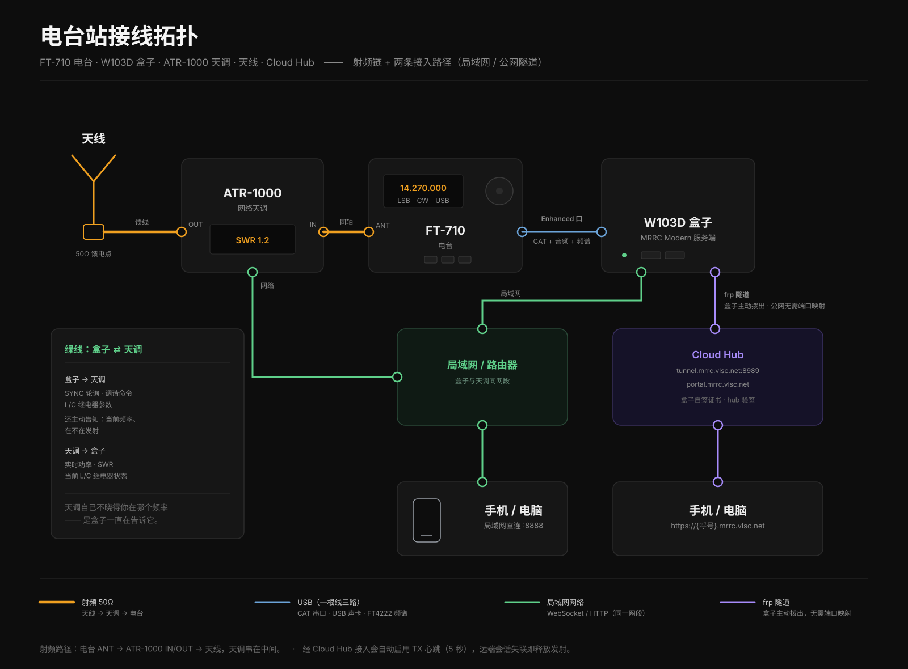

一张图看懂电台站怎么上云
射频链在本地，一根 USB 进盒子；盒子再主动拨出一条隧道。局域网与公网两条进入方式，服务的是同一台电台。

想看清每一层各自负责什么、边界画在哪、失效时表现什么 —— 看设计与层层实现 →
四条主张
整个接入层只有这四个设计承诺，其余都是为了让它们成立。
客户侧零入站
你的电脑或盒子只出站一条常驻连接。没有公网 IP、没有端口映射、没有 UPnP，甚至不需要知道自己的公网地址 —— 家庭宽带、4G/5G、公司网都能跑。
一个呼号一个入口
入口就是
<呼号>.mrrc.vlsc.net。呼号既是租户名，也是账号标识，不用再维护另一套用户名体系。大小写不敏感。
PTT 释放永远在本地
Hub 只是一条通道，从不写下 PTT。断线、掉网，一律由电台所在的那台机器本地强制回 RX —— 不依赖云端租约超时。最难的「TCP 还活着但对端已失联」由实例侧的会话心跳闸门覆盖（Hub 模式下建议开启，默认关闭）。
逐跳校验证书
整条链路端到端 TLS：浏览器到 Hub 用真证书，Hub 到你的实例按你自己的入口名逐台校验。没有哪一跳是靠「关掉校验」换来的。
现在能到什么程度
下面每一条都能在现网上实测。没做完的我们不会写得像是做完了。
| 能力 | 状态 | 说明 |
|---|---|---|
| 实例出站隧道 | 已跑通 | 客户侧零入站；电脑与 W103D 盒子两种实例形态都适用，隧道是盒子/应用自己拨出的 |
| 通配子域入口 + 真证书 | 已跑通 |
*.mrrc.vlsc.net，Let's
Encrypt，每日检查、剩余不足 30 天自动续期（当前证书有效至 2027-01-19）
|
| WebSocket 端点透明转发 | 已跑通 | 控制、频谱、收音频、发音频四路固定 + 天调（ATR-1000）可选，握手与关闭语义和直连一致 |
| 逐跳证书校验 | 已开启 | Hub → 实例按各实例自己的入口名校验，自签证书的公钥钉在信任包里通过校验 —— 不是靠关掉 verification |
| 会话凭据不进 URL | 已实现 | Hub 侧：nginx 日志不记查询串、hub 不经手拼串。实例侧已随之发布（mrrc_modern v1.25.4：令牌走 Cookie / Bearer，旧的「查询串拼串」形式仅作兼容保留并告警 —— 其决定 AD-024） |
| PTT 半开连接释放（远程会话活性） | 实例侧已有 隧道层待做 | 拔网线这类「TCP 还活着但对面已失联」的情形：实例侧已有可开的心跳闸门（默认关闭，Hub 模式建议 3–5 s）；隧道层的主动关流还没做。在此之前靠实例本地多层释放兜底。 |
| 自助注册 Portal（呼号核验四步） | 公网入口已上线 |
https://portal.mrrc.vlsc.net（通配证书覆盖，/apply按来源 IP
限流）。命中呼号库自动核验，库外转人工；核验通过后授予并写入注册表。见接入 · 注册
|
| 远程协助（客户发起，限时可关） | 已实现 | 应用里点一次「开启协助」，开通一条限时 SSH 通道请维护者进来看；口令由你持有、不落盘、不写日志；你按停止、窗口到期、门户强制，三条路都能关。见维护 · 远程协助 |
| 实例证书链（hub → 实例的一机一证） | 已在用 | 每个实例一张签给自己入口名的自签证书，公钥被 Hub 钉在信任包里、按名字逐台校验（2026-10-16 复核：在册实例的校验名由路由生成器逐台生成）。 |
| 实例安装器 | 脚本就位 | 自取 frpc 并校验 SHA-256、与 Hub 端版本钉死、 macOS / Linux / Windows 三平台常驻。尚未做成公开发布的安装包下载。 |
| 一机一证（隧道自身的设备 mTLS） | 阶段 2 | 隧道认证目前仍是 frp 的单个共享凭证 —— 与上一行的 TLS 身份是两件事（谁能接入隧道 vs 这台实例是不是它声称的那台）。 |
| 独占写者租约 | 阶段 2 | 现阶段由实例侧仲裁谁在发射 |
唯一的前置条件
能登录、有音频、能发射 —— 这是接入 Hub 的前提，Hub 不替你做这件事。还没装的话先去产品站；想省一台常开电脑，可以看 W103D 盒子的完整指南。
本页事实基线：2026-10-16 现场复核（入口与证书、注册表、路由
timer、门户、frps 与延迟实测），2026-10-25 补核离线语义与证书有效期。运营事实以
SDD/12 §12.8为准；发现页面与现网不符，就是页面该改。